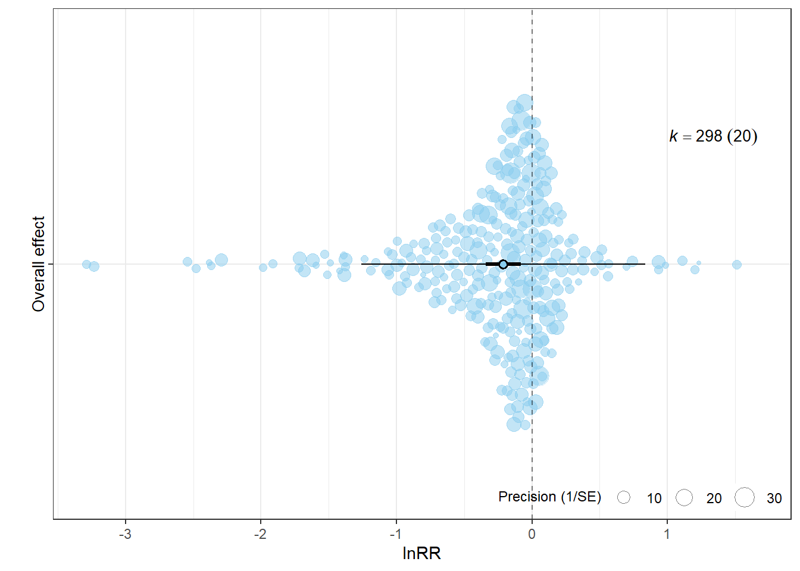
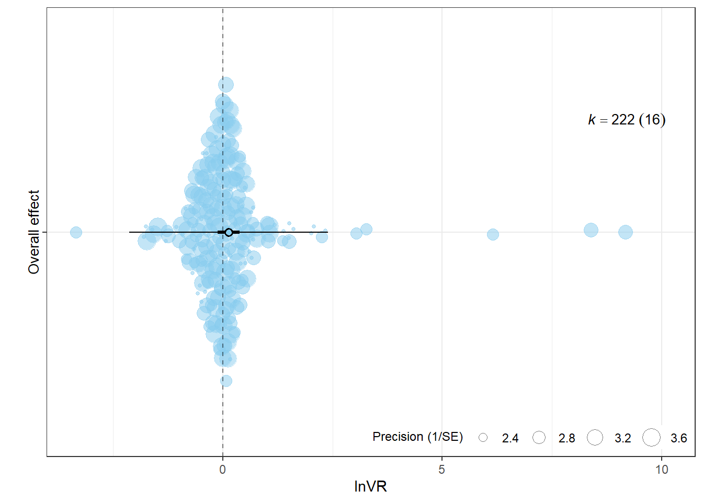
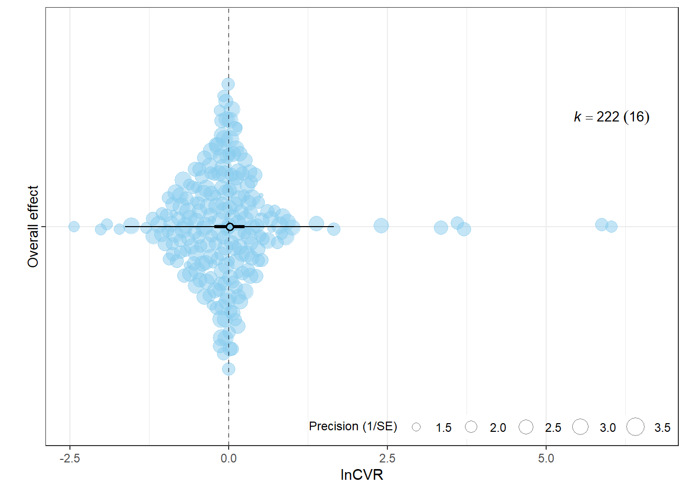

db <- readr::read_csv(here("..","data","db_effect_sizes.csv")) %>%
mutate(across(where(is.character), as.factor)) %>%
mutate(across(c(lnRR, lnRR_var, lnVR, lnVR_var, lnCVR, lnCVR_var), as.numeric))Overall effects
After estimating effect sizes, we fit three multilevel, intercept-only meta-analytic models to estimate the overall mean effect of music exposure on:
the mean outcome (lnRR),
the absolute variability (lnVR),
the relative variability (lnCVR).
Because many studies contribute multiple, non-independent outcomes (often measured on the same cohort), we use rma.mv() in metafor with a cohort-level variance–covariance (VCV) matrix built using vcalc().
Note
Variable definitions:
| Variable Name | Definition |
|---|---|
ES_ID |
Unique row identifier for each effect size. |
Study_ID |
Identifier for the primary research paper. |
Cohort_ID |
Identifier for specific experimental groups within a study (combination of Study_ID and Experiment_ID). |
lnRR, lnRR_var |
Log response ratio and its sample variance. |
lnVR, lnVR_var |
Log variability ratio and its sample variance. |
lnCVR, lnCVR_var |
Log coefficient of variation ratio and its sample variance. |
Variance–covariance matrices (within-cohort dependence)
We assume that multiple outcomes measured on the same cohort have correlated sampling errors. We therefore construct a VCV matrix with an assumed within-cohort correlation of r = 0.5 when correlations are not reported.
Multilevel intercept-only meta-analytic models
The code below fits the three models using the same specification:
Random intercepts for Study (
Study_ID)Random intercepts for Effect size (
ES_ID)Random intercepts for Strain (
Strain)REML estimation and
test = "t"
fit_overall_mv <- function(dat, yi, vi, rho = 0.5) {
dat2 <- dat %>%
filter(!is.na(.data[[yi]]), !is.na(.data[[vi]]))
VCV <- metafor::vcalc(
vi = dat2[[vi]],
cluster = dat2$Cohort_ID,
obs = dat2$ES_ID,
rho = rho,
data = dat2
)
mod <- metafor::rma.mv(
yi = dat2[[yi]],
V = VCV,
random = list(
~1 | Study_ID,
~1 | ES_ID,
~1 | Strain
),
test = "t",
method = "REML",
sparse = TRUE,
data = dat2
)
list(data = dat2, VCV = VCV, model = mod)
}
res_lnRR <- fit_overall_mv(db, yi = "lnRR", vi = "lnRR_var", rho = 0.5)
res_lnVR <- fit_overall_mv(db, yi = "lnVR", vi = "lnVR_var", rho = 0.5)
res_lnCVR <- fit_overall_mv(db, yi = "lnCVR", vi = "lnCVR_var", rho = 0.5)lnRR
summary(res_lnRR$model)
Multivariate Meta-Analysis Model (k = 298; method: REML)
logLik Deviance AIC BIC AICc
-242.8851 485.7702 493.7702 508.5452 493.9072
Variance Components:
estim sqrt nlvls fixed factor
sigma^2.1 0.0494 0.2223 20 no Study_ID
sigma^2.2 0.2302 0.4798 298 no ES_ID
sigma^2.3 0.0000 0.0001 6 no Strain
Test for Heterogeneity:
Q(df = 297) = 5799.5331, p-val < .0001
Model Results:
estimate se tval df pval ci.lb ci.ub
-0.2120 0.0662 -3.2046 297 0.0015 -0.3422 -0.0818 **
---
Signif. codes: 0 '***' 0.001 '**' 0.01 '*' 0.05 '.' 0.1 ' ' 1orchaRd::i2_ml(res_lnRR$model) I2_Total I2_Study_ID I2_ES_ID I2_Strain
9.652114e+01 1.706309e+01 7.945805e+01 1.332707e-06 p_lnRR <- orchard_plot(
res_lnRR$model,
group = "Study_ID",
xlab = "lnRR",
flip = TRUE
) +
scale_x_discrete(labels = "Overall effect")
p_lnRR
lnVR
summary(res_lnVR$model)
Multivariate Meta-Analysis Model (k = 222; method: REML)
logLik Deviance AIC BIC AICc
-348.0396 696.0792 704.0792 717.6718 704.2644
Variance Components:
estim sqrt nlvls fixed factor
sigma^2.1 0.0843 0.2903 16 no Study_ID
sigma^2.2 1.2242 1.1064 222 no ES_ID
sigma^2.3 0.0000 0.0001 6 no Strain
Test for Heterogeneity:
Q(df = 221) = 4392.5021, p-val < .0001
Model Results:
estimate se tval df pval ci.lb ci.ub
0.1346 0.1283 1.0490 221 0.2953 -0.1183 0.3875
---
Signif. codes: 0 '***' 0.001 '**' 0.01 '*' 0.05 '.' 0.1 ' ' 1orchaRd::i2_ml(res_lnVR$model) I2_Total I2_Study_ID I2_ES_ID I2_Strain
9.227147e+01 5.944073e+00 8.632740e+01 2.435885e-07 p_lnVR <- orchard_plot(
res_lnVR$model,
group = "Study_ID",
xlab = "lnVR",
flip = TRUE
) +
scale_x_discrete(labels = "Overall effect")
p_lnVR
lnCVR
summary(res_lnCVR$model)
Multivariate Meta-Analysis Model (k = 222; method: REML)
logLik Deviance AIC BIC AICc
-283.6139 567.2277 575.2277 588.8204 575.4129
Variance Components:
estim sqrt nlvls fixed factor
sigma^2.1 0.0899 0.2999 16 no Study_ID
sigma^2.2 0.5904 0.7684 222 no ES_ID
sigma^2.3 0.0000 0.0000 6 no Strain
Test for Heterogeneity:
Q(df = 221) = 1588.4494, p-val < .0001
Model Results:
estimate se tval df pval ci.lb ci.ub
0.0169 0.1211 0.1397 221 0.8891 -0.2218 0.2556
---
Signif. codes: 0 '***' 0.001 '**' 0.01 '*' 0.05 '.' 0.1 ' ' 1orchaRd::i2_ml(res_lnCVR$model) I2_Total I2_Study_ID I2_ES_ID I2_Strain
8.231935e+01 1.087996e+01 7.143938e+01 1.188813e-07 p_lnCVR <- orchard_plot(
res_lnCVR$model,
group = "Study_ID",
xlab = "lnCVR",
flip = TRUE
) +
scale_x_discrete(labels = "Overall effect")
p_lnCVR
Note
sessionInfo()R version 4.5.2 (2025-10-31 ucrt)
Platform: x86_64-w64-mingw32/x64
Running under: Windows 11 x64 (build 26200)
Matrix products: default
LAPACK version 3.12.1
locale:
[1] LC_COLLATE=English_Guernsey.utf8 LC_CTYPE=English_Guernsey.utf8
[3] LC_MONETARY=English_Guernsey.utf8 LC_NUMERIC=C
[5] LC_TIME=English_Guernsey.utf8
time zone: America/Edmonton
tzcode source: internal
attached base packages:
[1] stats graphics grDevices utils datasets methods base
other attached packages:
[1] orchaRd_2.1.3 metafor_4.8-0 numDeriv_2016.8-1.1
[4] metadat_1.4-0 Matrix_1.7-4 patchwork_1.3.2
[7] lubridate_1.9.4 forcats_1.0.1 stringr_1.6.0
[10] dplyr_1.1.4 purrr_1.2.1 readr_2.1.6
[13] tidyr_1.3.2 tibble_3.3.1 ggplot2_4.0.1
[16] tidyverse_2.0.0 knitr_1.51 here_1.0.2
[19] dtplyr_1.3.2 DT_0.34.0
loaded via a namespace (and not attached):
[1] beeswarm_0.4.0 gtable_0.3.6 xfun_0.56
[4] htmlwidgets_1.6.4 lattice_0.22-7 mathjaxr_2.0-0
[7] tzdb_0.5.0 vctrs_0.7.1 tools_4.5.2
[10] generics_0.1.4 parallel_4.5.2 sandwich_3.1-1
[13] pacman_0.5.1 pkgconfig_2.0.3 data.table_1.18.2.1
[16] RColorBrewer_1.1-3 S7_0.2.1 lifecycle_1.0.5
[19] compiler_4.5.2 farver_2.1.2 codetools_0.2-20
[22] vipor_0.4.7 htmltools_0.5.9 yaml_2.3.12
[25] pillar_1.11.1 crayon_1.5.3 MASS_7.3-65
[28] multcomp_1.4-29 nlme_3.1-168 tidyselect_1.2.1
[31] digest_0.6.39 mvtnorm_1.3-3 stringi_1.8.7
[34] labeling_0.4.3 splines_4.5.2 latex2exp_0.9.8
[37] rprojroot_2.1.1 fastmap_1.2.0 grid_4.5.2
[40] cli_3.6.5 magrittr_2.0.4 survival_3.8-6
[43] TH.data_1.1-5 withr_3.0.2 scales_1.4.0
[46] bit64_4.6.0-1 ggbeeswarm_0.7.3 timechange_0.3.0
[49] estimability_1.5.1 rmarkdown_2.30 emmeans_2.0.1
[52] bit_4.6.0 otel_0.2.0 zoo_1.8-15
[55] hms_1.1.4 coda_0.19-4.1 evaluate_1.0.5
[58] rlang_1.1.7 xtable_1.8-4 glue_1.8.0
[61] rstudioapi_0.18.0 vroom_1.7.0 jsonlite_2.0.0
[64] R6_2.6.1